Cada disciplina, un proveedor distinto
El que calcula la estructura no habla con el que monta el cuadro, y el de la electrónica llega cuando ya no se puede cambiar nada.
Somos un equipo técnico que lleva los proyectos e instalaciones industriales de siempre, y va más allá: diseño de PCBs, impresión 3D, sistemas embebidos y automatización. De la idea a la puesta en marcha, con un único interlocutor.
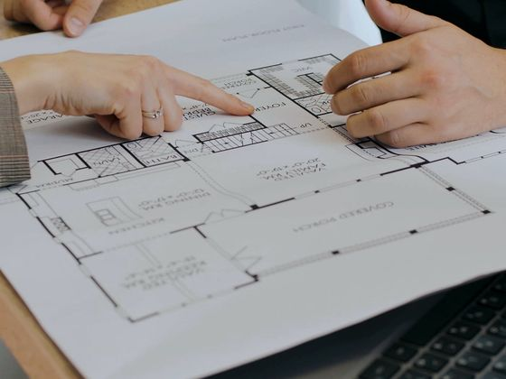
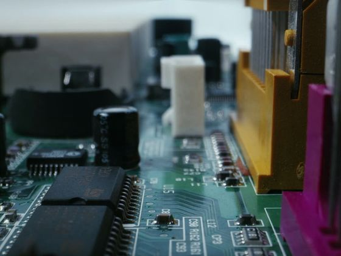
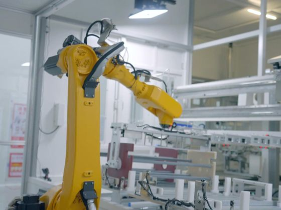
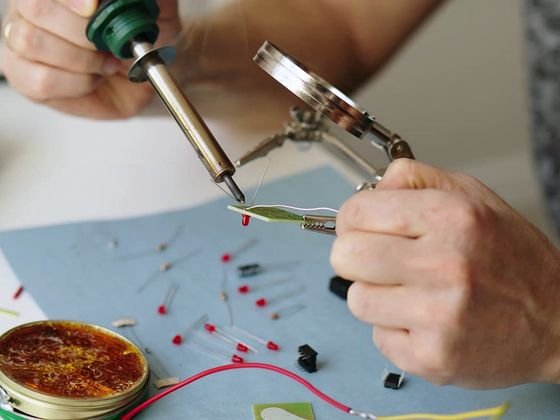
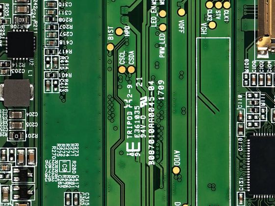
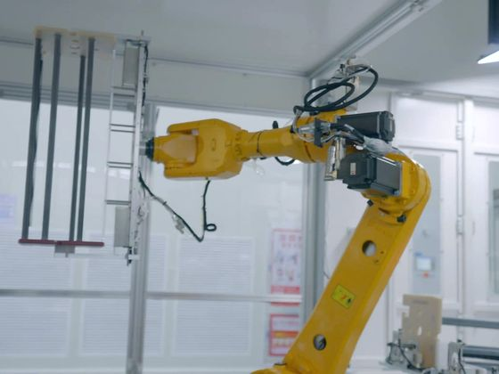
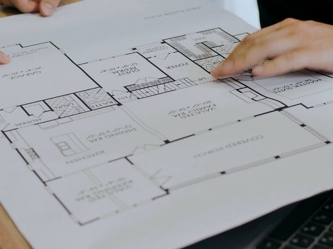
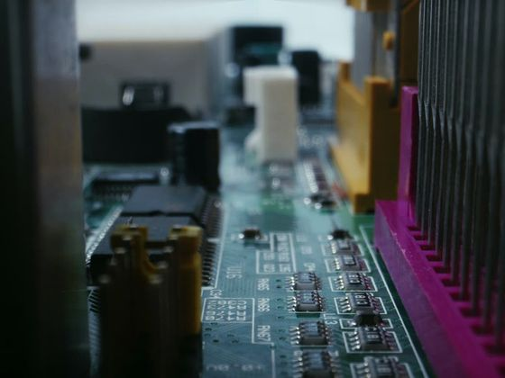
Casi ningún proyecto industrial es solo mecánico o solo eléctrico. Y en cuanto hay que tocar dos disciplinas, empieza el baile.
El que calcula la estructura no habla con el que monta el cuadro, y el de la electrónica llega cuando ya no se puede cambiar nada.
Cada proveedor espera a que termine el anterior. Lo que podría ir en paralelo acaba yendo en fila.
Sin un responsable único del conjunto, cada parte defiende la suya y el problema se queda en tierra de nadie.
Traduciendo entre oficios y persiguiendo plazos, que es exactamente el trabajo que habías externalizado.
Casi nunca es un problema técnico. Es un problema de coordinación — y se resuelve teniendo a una sola persona al otro lado del teléfono.
Cubrimos el ciclo completo de un proyecto: de los proyectos e instalaciones industriales al desarrollo electrónico y la fabricación de prototipos.
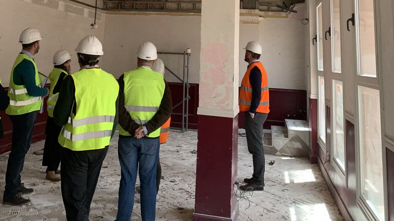
01Los proyectos de ingeniería de siempre, con respaldo documental completo.
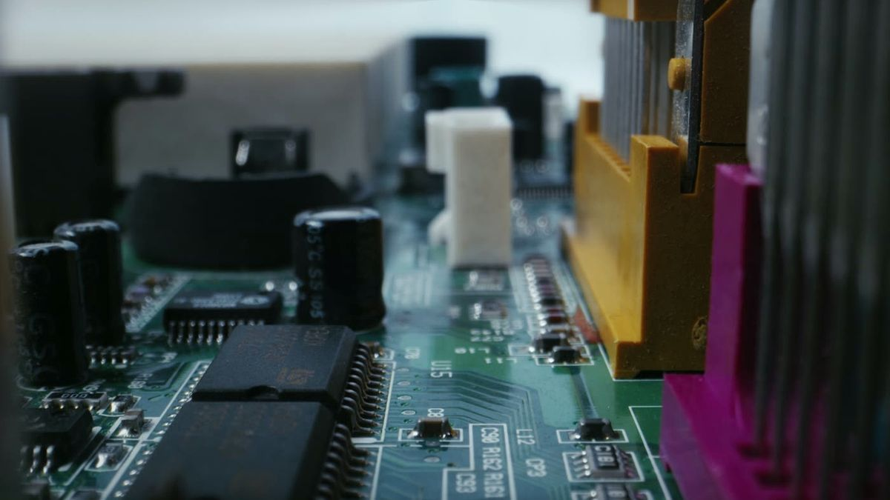
02Lo que muchos estudios subcontratan, aquí lo hacemos nosotros.
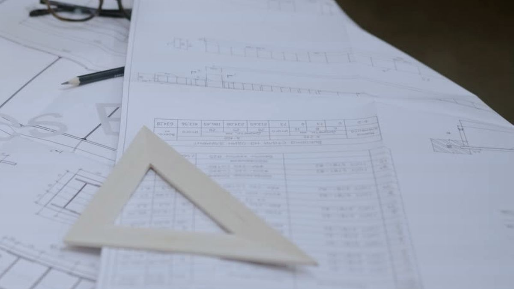
03Asesoramiento especializado para las decisiones de ingeniería correctas.
Si has modificado un vehículo, la ITV no te lo pasa sin papeles. Nosotros los redactamos y los firmamos: proyecto técnico, certificado de dirección de obra y la ficha técnica reducida con las características reales del vehículo después de la reforma.
Documentación redactada y firmada por ingeniera industrial colegiada, según el Real Decreto 866/2010 y el Manual de Reformas de Vehículos. Cada reforma tiene su tipo y su documentación: te decimos cuál necesita la tuya antes de cobrarte nada.
No es lo mismo proyectar sobre plano que hacerlo para una nave que funciona doce horas al día. Estos son los entornos en los que nos movemos.
El sector más exigente de Almería. Manipulado, frío, líneas de confección y las instalaciones que las sostienen.
Estructuras, protección contra incendios, redes de agua y baja tensión, con el respaldo documental y las legalizaciones que toquen.
Máquinas que hay que hacer hablar entre sí. Control, sensórica, integración y puesta en marcha.
De la idea a la pieza: electrónica a medida, firmware, impresión 3D y las series cortas que nadie quiere fabricar.
No hay que coordinar proveedores ni traducir entre disciplinas. El mismo equipo que redacta el proyecto es el que diseña la electrónica y la pone en marcha.
Nos cuentas qué necesitas resolver. Si hace falta, vamos a verlo: casi ningún proyecto industrial se entiende del todo por teléfono.
Te enviamos una propuesta con el alcance por escrito, el plazo y el precio. Sabes qué entra y qué no antes de decidir.
Ingeniería, cálculo, PCB, firmware o pieza fabricada, según lo que pida el proyecto. Con el respaldo documental que corresponda.
Lo instalamos, lo probamos en condiciones reales y te lo entregamos funcionando, con la documentación necesaria.
Aparte de los encargos, mantenemos una investigación propia en marcha. La actual es un sistema de visión artificial para el control de plagas en cultivo protegido: un nodo autónomo que fotografía la trampa, analiza la imagen y avisa de lo que ha entrado.
No se vende. Es el banco de pruebas donde medimos hasta dónde llega cada técnica antes de proponérsela a un cliente, y de donde salen las respuestas incómodas: qué precisión se sostiene fuera del laboratorio, qué aguanta un verano de invernadero y qué cuesta de verdad mantener un equipo funcionando en campo.
Plantear un proyecto de este tipoIndalia es un equipo de ingeniería formado por dos ingenieros técnicos superiores con una visión amplia del proyecto. Esa polivalencia nos permite afrontarlo completo, sin trocearlo entre varios proveedores.
Hacemos los proyectos e instalaciones industriales de siempre y, además, llegamos donde otros estudios subcontratan: diseño de PCBs, impresión 3D, sistemas embebidos y automatización. Todo bajo el mismo equipo.
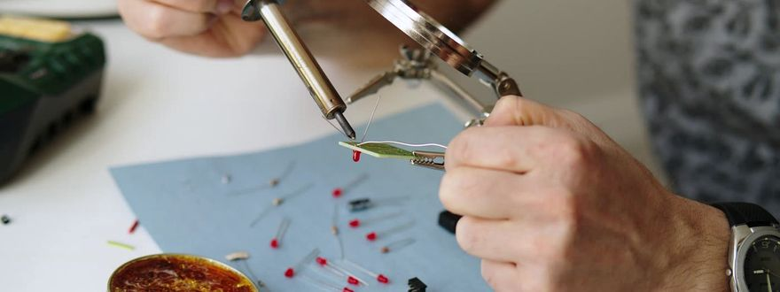
CofundadorIngeniero en Electrónica y Automatización · Robótica e I+D
Diseña la electrónica que da vida a robots y máquinas, y lleva la inteligencia artificial a proyectos reales. Del primer PCB al sistema funcionando.
LinkedIn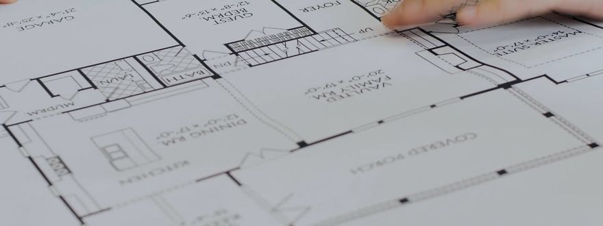
CofundadoraIngeniera Industrial superior · Proyectos e instalaciones
Saca adelante proyectos industriales de principio a fin, curtida en uno de los sectores más exigentes: el hortofrutícola. Soluciones que funcionan en el mundo real.
LinkedInSea industrial, electrónico o de fabricación, lo afrontamos como equipo. Cuéntanos qué necesitas y preparamos una propuesta a medida.
Respondemos en menos de 24 h laborables. Sin compromiso.